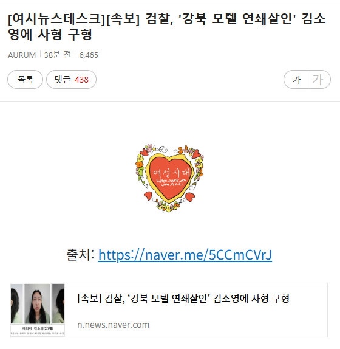
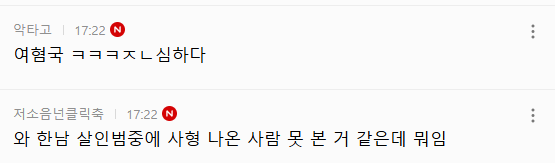
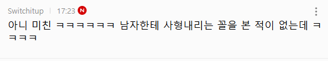
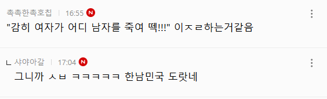
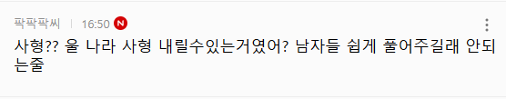
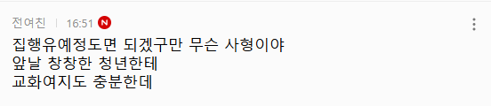
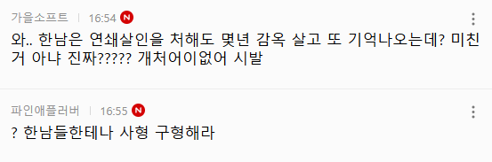
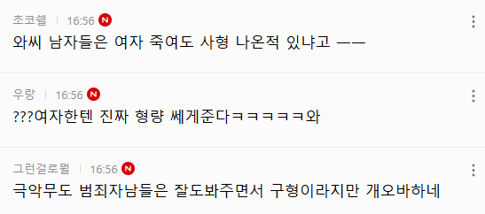
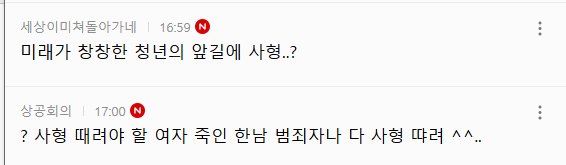
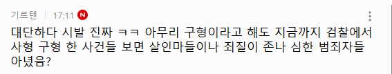

기타 댓글 반응들
대부분 엥? 이게 왜 사형?
한남들은 범죄 일으켜도 사형아닌데?
검사가 남자아님?
사형이 이렇게 쉬웠어?
여자라서 사형아니야?
반대로 남자였으면 사형아니야!
20대 초반의 여성인데 사형이 맞아?
한남들은 사형 못 받은거같은데? 왜 여자들만 사형이냐
장윤기는 사형 아니라는데 왜 여자만 사형임?
https://cafe.daum.net/subdued20club/ReHf/5719808
https://cafe.daum.net/subdued20club/ReHf/5719821
https://cafe.daum.net/subdued20club/ReHf/5719843
등등
댓글
수집 당시 댓글 26개
파라부트 · 3 일 전
이런것들이랑 부대껴 사는것들도 뭐 ㅋㅋ 이민 국제결혼
へび · 3 일 전
ㄹㅇㅋㅋ 이래도 한 30분 뒤면 한녀 아이돌 사진 올려놓고 헥헥 대고 있을걸 ㅋㅋ
도르래 · 3 일 전
저기가 전체가 아님. 민증 인증해야 가입되는데
대추차 · 3 일 전
이마에 여시라고 낙인 찍어라 미친련들
돈안지유돈 · 3 일 전
여성시대는 중국인이 아니라 토종한국인이 저런 댓글 다는거다
산동네기거중 · 3 일 전
쟤는 수사중에도 살인했던거 아니였음?
따봉요정 · 3 일 전
구형과 선고를 구분 못하는 멍청이들
평택슬릭백 · 3 일 전
떽
へび · 3 일 전
남성 살인범들이 사형 선고 받고 학살당하고 있을때 겨우 최초로 나온 여성 살인범에 대한 사형 판례인데 이거 가지고도 문제 삼는다고?
antianti · 2 일 전
최초는 아님 김선자, 박분례, 엄인숙 등 사형 집행된 연쇄살인범 꽤 있음
Ang마사냥꾼 · 3 일 전
정신상태 심각한게 안타깝네...
그게뭔데인싸야 · 3 일 전
일본 트위터에서 일본인인척 남혐하던 네임드들 죄다 한국인인거 까발려진게 언젠데 중국인드립인지.. 남혐페미에 대해선 지금 한국이 세계 최선진국이자 최대 수출국인데 웨이보 페미도 한국인 아닐까 의심해봐야 될 상황아닌가
흰껄룩기획 · 3 일 전
구형은 뉴스에 나오는 흉악범들 거의 사형구형일텐데 ㅋㅋ 윤종이 원종이 피자집 걔 아무튼 신상공개된 애들 일심 구형보면 다 사형이구만 ㅋㅋ
그게뭔데인싸야 · 3 일 전
관심안가지면 포티피프티햄들은 쟤네는 존나 천사인데 이대남만 개쓰레기인줄 앎
너말이야너 · 3 일 전
일베하는 년들이라니까
개트림 · 3 일 전
구형. 선고 구분못할껄
SunOfaBeach · 3 일 전
저것들 백퍼 살인마년 보다 못생겼음
뒤집 · 3 일 전
얼굴 원판공개 안했으면 저런반응 아니었을텐데
RESCENE · 3 일 전
쟤들 기준에선 저게 맞음 쟤들은 여자가 자기 아빠 죽이면 고맙다고 파티 열 듯
PaleBlueDot · 3 일 전
씹보지 씨발년들아 느금마랑 니년들 식칼이나 씹어 삼켜라 대가리 벽돌로 찍어죽일 년들아
찰리푸스 · 3 일 전
병신년들 발작하는거 존나 웃긴데ㅋㅋㅋ
마키마의반죽교실 · 3 일 전
미친년들
뒷산놀이터 · 3 일 전
저기다가 누가 남자범죄자들 사형 많은데? 하면 거봐 시발 한남들이 여자 다 죽이고 다녀서 무서워서 못살겠다 여혐민국!!! ㅇㅈㄹ하겠지 ㅋㅋㅋㅋㅋㅋㅋ
하푸우 · 3 일 전
남초는 아무리 그래도 살인범 옹호는 안하는데
기차말고버스애용 · 2 일 전
곱게 자란 나는 이런 걸 보지 말아야해
다주택중과세폐지 · 1 일 전
가족 국적표시를 의무화해야함. 막상 내 주변에 저런애들 없는데 2세대 조선족이 너무 많음